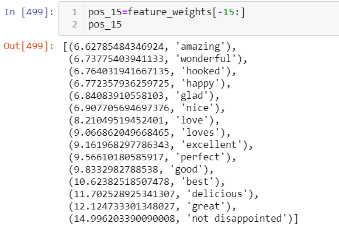
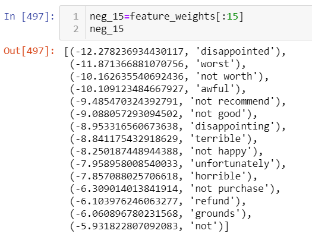

This project is aimed at finding out the sentiment of the customer based on their Review of something. Finally this model will classify the sentiment of the customer to Either positive or negative
To evaluate the correctness of the prediction we will use f1_score as a measure.
Technologies Used: Python, Pandas, NLP,Sklearn
You can find the complete code here.
Observations:
1. After applying all Machine learning models to get the best model.
2. On comparing all models based on their F1_Score Metric, Logistic regression and SVm models are performing with 95% Accuraccy
3. Since Both Logistic Regression and SVM performing same, I went ahead with Logistic Regression.
Below are the top 15 positive words with weights
Below are the top 15 Negative words with weights
I have deployed the model in heroku with the help of Flask , In case if you are interested you can check below
Sentiment Detector